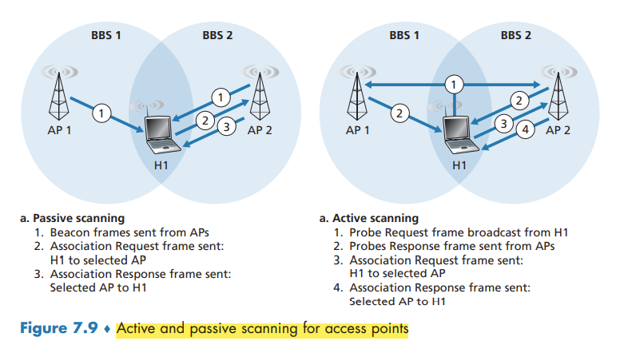
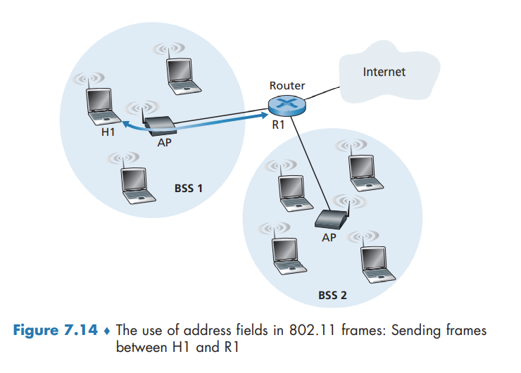
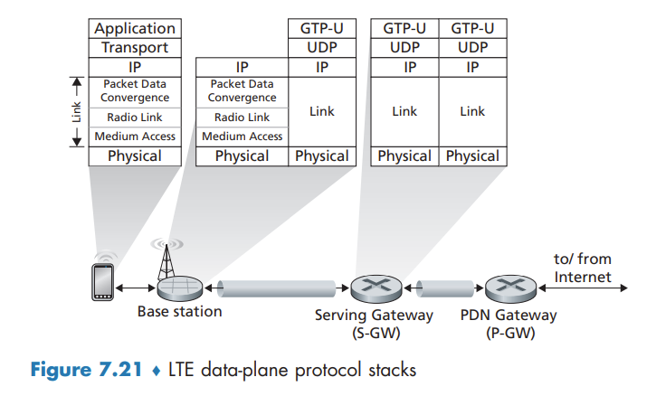

Wireless and Mobile Networks
This contents of this chapter is part of the curriculum for TTM4100, except for the sections 7.2.1, 7.3.6, 7.5, 7.6 and 7.7.
Introduction
Elements in a wireless network:
- Wireless hosts. hosts are the end-system devices that run applications.
- Wireless links. A host connects to a base station (defined below) or to another wireless host through a wireless communication link.
- Base station. Cell towers in cellular networks and access points in 802.11 wireless LANs are examples of base stations.
- Network infrastructure. This is the larger network with which a wireless host may wish to communicate.
In ad hoc networks, wireless hosts have no such infrastructure with which to connect. In the absence of such infrastructure, the hosts themselves must provide for services such as routing, address assignment, DNS-like name translation, and more.
When a mobile host moves beyond the range of one base station and into the range of another, it will change its point of attachment into the larger network —a process referred to as handoff or handover.
we can classify wireless networks according to two criteria: (i) whether a packet in the wireless network crosses exactly one wireless hop or multiple wireless hops, and (ii) whether there is infrastructure such as a base station in the network:
- Single-hop, infrastructure-based. (vast majority)
- Single-hop, infrastructure-less. no base station is connected. However, one of the nodes in this single-hop network may coordinate the transmissions of the other nodes.
- Multi-hop, infrastructure-based. I.e. wireless mesh networks deployed in homes.
- Multi-hop, infrastructure-less. Nodes may also be mobile, with connectivity changing among nodes—a class of networks known as mobile ad hoc networks (MANETs).
Wireless Links and Network Characteristics
Wireless links differ from their wired counterparts in a number important ways:
- Decreasing signal strength.
- Interference from other sources.
- Multipath propagation.
Wireless link protocols (such as the 802.11 protocol) employ not only powerful CRC error detection codes, but also link-level reliable-data-transfer protocols that retransmit corrupted frames.
The signal-to-noise ratio (SNR) is a relative measure of the strength of the received signal (i.e., the information being transmitted) and this noise. typically measured in units of decibels (dB). a larger SNR makes it easier for the receiver to extract the transmitted signal from the background noise.
- For a given modulation scheme (the process of converting data into radio waves), the higher the SNR, the lower the BER.
- For a given SNR, a modulation technique with a higher bit transmission rate (whether in error or not) will have a higher BER.
- Dynamic selection of the physical-layer modulation technique can be used to adapt the modulation technique to channel conditions.

WiFi: 802.11 Wireless LANs
Although many technologies and standards for wireless LANs were developed in the 1990s, one particular class of standards has clearly emerged as the winner: the IEEE 802.11 wireless LAN, also known as WiFi.
The different 802.11 b, g, n, ac, ax standards all share some common characteristics, including the 802.11 frame format that we will study shortly, and are backward compatible,
They also all use the same medium access protocol, CSMA/CA

The 802.11 Wireless LAN Architecture
The fundamental building block of the 802.11 architecture is the basic service set (BSS). A BSS contains one or more wireless stations and a central base station, known as an access point (AP).
In a typical home network, there is one AP and one router (typically integrated together as one unit) that connects the BSS to the Internet.
As with Ethernet devices, each 802.11 wireless station has a 6-byte MAC address.
IEEE 802.11 stations can also group themselves together to form an ad hoc network.
Channels and Association
In 802.11, each wireless station needs to associate with an AP before it can send or receive network-layer data. the administrator assigns a one or two-word Service Set Identifier (SSID) to the access point.
recall that 802.11 operates in the frequency range of 2.4 GHz to 2.4835 GHz. Within this 85 MHz band, 802.11 defines 11 partially overlapping channels. Any two channels are non-overlapping if and only if they are separated by four or more channels.
A WiFi jungle is any physical location where a wireless station receives a sufficiently strong signal from two or more APs. To gain Internet access, your wireless device needs to join exactly one of the subnets and hence needs to associate with exactly one of the APs.
The 802.11 standard requires that an AP periodically send beacon frames, each of which includes the AP’s SSID and MAC address.
The process of scanning channels and listening for beacon frames is known as passive scanning. A wireless device can also perform active scanning, by broadcasting a probe frame that will be received by all APs within the wireless device’s range

After selecting the AP with which to associate, the wireless device sends an association request frame to the AP, and the AP responds with an association response frame.
Once associated with an AP, the device will want to join the subnet. Thus, the device will typically send a DHCP discovery message into the subnet via the AP in order to obtain an IP address on the subnet.
In order to create an association with a particular AP, the wireless device may be required to authenticate itself. One approach, used by many companies, is to permit access to a wireless network based on a device’s MAC address. A second approach, used by many Internet cafés, employs usernames and passwords.
The 802.11 MAC Protocol
because multiple wireless devices, or the AP itself may want to transmit data frames at the same time over the same channel, a multiple access protocol is needed to coordinate the transmissions.
Inspired by the huge success of Ethernet and its random access protocol, the designers of 802.11 chose a random access protocol for 802.11 wireless LANs. This random access protocol is referred to as CSMA with collision avoidance, or more succinctly as CSMA/CA. As with Ethernet’s CSMA/CD, the “CSMA” in CSMA/CA stands for “carrier sense multiple access,”
First, instead of using collision detection, 802.11 uses collision-avoidance techniques. Second, because of the relatively high bit error rates of wireless channels, 802.11 (unlike Ethernet) uses a link-layer acknowledgment/retransmission (ARQ) scheme.
the 802.11 MAC protocol does not implement collision detection. There are two important reasons for this:
- The ability to detect collisions requires the ability to send (the station’s own signal) and receive (to determine whether another station is also transmitting) at the same time.
- the hidden terminal problem and fading
once a station begins to transmit a frame, it transmits the frame in its entirety;
802.11 MAC protocol uses link-layer acknowledgments. when the destination station receives a frame that passes the CRC, it waits a short period of time known as the Short Inter-frame Spacing (SIFS) and then sends back an acknowledgment frame. If the transmitting station does not receive an acknowledgment within a given amount of time, it assumes that an error has occurred and retransmits the frame, using the CSMA/CA protocol to access the channel.

The 802.11 CSMA/CA protocol:
- If initially the station senses the channel idle, it transmits its frame after a short period of time known as the Distributed Inter-frame Space (DIFS);
- Otherwise, the station chooses a random backoff value using binary exponential backoff. While the channel is sensed busy, the counter value remains frozen.
- When the counter reaches zero the station transmits the entire frame and then waits for an acknowledgment.
- If an acknowledgment is received, the transmitting station knows that its frame has been correctly received at the destination station. If the station has another frame to send, it begins the CSMA/CA protocol at step 2. If the acknowledgment isn’t received, the transmitting station reenters the backoff phase in step 2, with the random value chosen from a larger interval.
Because 802.11 does not detect a collision and abort transmission, a frame suffering a collision will be transmitted in its entirety. The goal in 802.11 is thus to avoid collisions whenever possible. In 802.11, if the two stations sense the channel busy, they both immediately enter random backoff, hopefully choosing different backoff values.
Dealing with Hidden Terminals: RTS and CTS
In order to avoid this problem, the IEEE 802.11 protocol allows a station to use a short Request to Send (RTS) control frame and a short Clear to Send (CTS) control frame to reserve access to the channel.
CTS frame serves two purposes: It gives the sender explicit permission to send and also instructs the other stations not to send for the reserved duration.
The use of the RTS and CTS frames can improve performance in two important ways:
- The hidden station problem is mitigated
- a collision involving an RTS or CTS frame will last only for the duration of the short RTS or CTS frame.


Although the RTS/CTS exchange can help reduce collisions, it also introduces delay and consumes channel resources. For this reason, the RTS/CTS exchange is only used (if at all) to reserve the channel for the transmission of a long DATA frame. In practice, each wireless station can set an RTS threshold such that the RTS/ CTS sequence is used only when the frame is longer than the threshold.
Using 802.11 as a Point-to-Point Link
if two nodes each have a directional antenna, they can point their directional antennas at each other and run the 802.11 protocol over what is essentially a point-to-point link.
The IEEE 802.11 Frame
Payload and CRC Fields
The payload is permitted to be as long as 2,312 bytes, it is typically fewer than 1,500 bytes, holding an IP datagram or an ARP packet.

The type and subtype fields are used to distinguish the association, RTS, CTS, ACK, and data frames. The to and from fields are used to define the meanings of the different address fields.
Address Fields
Perhaps the most striking difference in the 802.11 frame is that it has four address fields, each of which can hold a 6-byte MAC address. The fourth address field is used when APs forward frames to each other in ad hoc mode.
- Address 2 is the MAC address of the station that transmits the frame.
- Address 1 is the MAC address of the wireless station that is to receive the frame.
- the BSS is part of a subnet, and that this subnet connects to other subnets via some router interface. Address 3 contains the MAC address of this router interface.

Note that the AP and Router may be separate devices.
an AP is a link-layer device, and thus neither “speaks” IP nor understands IP addresses. The router is not aware that there is an AP between it and H1; from the router’s perspective, H1 is just a host in one of the subnets to which it (the router) is connected.
Sequence Number, Duration, and Frame Control Fields
In 802.11, whenever a station correctly receives a frame from another station, it sends back an acknowledgment. the use of sequence numbers allows the receiver to distinguish between a newly transmitted frame and the retransmission of a previous frame. The sequence number field in the 802.11 frame thus serves exactly the same purpose here at the link layer as it did in the transport layer
Mobility in the Same IP Subnet
In order to increase the physical range of a wireless LAN, companies and universities will often deploy multiple BSSs within the same IP subnet.

Because in this example the interconnection device that connects the two BSSs is not a router, all of the stations in the two BSSs, including the APs, belong to the same IP subnet. Thus, when H1 moves from BSS1 to BSS2, it may keep its IP address and all of its ongoing TCP connections.
switches are “self-learning” and automatically build their forwarding tables. This self-learning feature nicely handles occasional moves. however, switches were not designed to support highly mobile users who want to maintain TCP connections while moving between BSSs. One solution is for AP2 to send a broadcast Ethernet frame with H1’s source address to the switch just after the new association. When the switch receives the frame, it updates its forwarding table, allowing H1 to be reached via AP2.
Advanced Features in 802.11
802.11 Rate Adaptation
some 802.11 implementations have a rate adaptation capability that adaptively selects the underlying physical-layer modulation technique to use based on current or recent channel characteristics. If a node sends two frames in a row without receiving an acknowledgment (an implicit indication of bit errors on the channel), the transmission rate falls back to the next lower rate.
This rate adaptation mechanism shares the same “probing” philosophy as TCP’s congestion-control mechanism—when conditions are good (reflected by ACK receipts), the transmission rate is increased until something “bad” happens (the lack of ACK receipts); when something “bad” happens, the transmission rate is reduced.
Power Management
The 802.11 standard provides power-management capabilities that allow 802.11 nodes to minimize the amount of time that their sense, transmit, and receive functions and other circuitry need to be “on.”
A node is able to explicitly alternate between sleep and wake states. A node indicates to the access point that it will be going to sleep by setting the power-management bit in the header of an 802.11 frame to 1. A node will wake up just before the AP sends a beacon frame, and quickly enter the fully active state.
A node that has no frames to send or receive can be asleep 99% of the time, resulting in a significant energy savings.
Cellular Networks: 4G and 5G
The term cellular refers to the fact that the region covered by a cellular network is partitioned into a number of geographic coverage areas, known as cells. Each cell contains a base station that transmits signals to, and receives signals from, the mobile devices currently in its cell.
4G LTE Cellular Networks: Architecture and Elements
All network elements communicate with each other using the IP protocol.
How the various elements of a 4G LTE network interact with each other in both the data and the control planes:
- Mobile Device. implements the full 5-layer Internet protocol stack. is a network endpoint, with an IP address. also has a globally unique 64-bit identifier called the International Mobile Subscriber Identity (IMSI), which is stored on its SIM (Subscriber Identity Module) card.
- Base Station. The base station sits at the “edge” of the carrier’s network and is responsible for managing the wireless radio resources and the mobile devices with its coverage area. Nearby base stations also coordinate among themselves to manage the radio spectrum to minimize interference between cells.
- Home Subscriber Server (HSS). is a control-plane element. The HSS is a database, storing information about the mobile devices for which the HSS’s network is their home network.
- Serving Gateway (S-GW), Packet Data Network Gateway (P-GW), and other network routers. the Serving Gateway and the Packet Data Network Gateway are two routers that lie on the data path between the mobile device and the Internet. The PDN Gateway also provides NAT IP addresses to mobile devices and performs NAT functions. The PDN Gateway is the last LTE element that a datagram originating at a mobile device encounters before entering the larger Internet.
- Mobility Management Entity (MME). The MME is also a control-plane element, Along with the HSS, it plays an important role in authenticating a device wanting to connect into its network. It also sets up the tunnels on the data path from/to the device and the PDN Internet gateway router, and maintains information about an active mobile device’s cell location within the carrier’s cellular network.
- Cell location tracking. As the device moves between cells, the base stations will update the MME on the device’s location.
LTE Protocols Stacks
The 4G LTE architecture is an all-IP architecture. the new LTE protocols that we’ll focus on here are primarily at the link and physical layers, and in mobility management.
LTE divides the mobile device’s link layer into three sublayers:
- The Packet Data Convergence Protocol (PDCP) performs IP header/compression in order to decrease the number of bits sent over the wireless link, and encryption/decryption of the IP datagram using keys that were established via signaling messages between the LTE mobile device and the Mobility Management Entity (MME)
- The Radio Link Control (RLC) Protocol performs two important functions: (i) fragmenting (on the sending side) and reassembly (on the receiving) of IP datagrams that are too large to fit into the underlying link-layer frames, and (ii) link-layer reliable data transfer at the through the use of an ACK/NAK-based ARQ protocol.
- The Medium Access Control (MAC) layer performs transmission scheduling, that is, the requesting and use of the radio transmission slots. r also performs additional error detection/ correction functions, including the use of redundant bit transmission as a forward error-correction technique.

LTE Radio Access Network
LTE uses a combination of frequency division multiplexing and time division multiplexing on the downstream channel, known as orthogonal frequency division multiplexing (OFDM)
Additional LTE Functions: Network Attachment and Power Management
two additional important LTE functions: (i) the process with which a mobile device first attaches to the network and (ii) the techniques used by the mobile device, in conjunction with core network elements, to manage its power use.
Network Attachment
The process by which a mobile device attaches to the cellular carrier’s network divides broadly into three phases:
- Attachment to a Base Station.
- Mutual Authentication. the base station contacts the local MME to perform mutual authentication
- Mobile-device-to-PDN-gateway Data Path Configuration. The MME contacts the PDN gateway (which also provides a NAT address for the mobile device), the Serving gateway, and the base station to establish the two tunnels shown in Figure 7.21. Once this phase is complete, the mobile device is able to send/receive IP datagrams via the base station through these tunnels to and from the Internet!
Power Management: Sleep Modes
In 4G LTE, a sleeping mobile device can be in one of two different sleep states.
In the discontinuous reception state, the mobile device and the base station will schedule periodic times in advance at which the mobile device will wake up and actively monitor the channel for downstream transmissions.
the Idle state the mobile device’s radio wakes up and monitors the channel even less frequently. if the mobile device moves into a new cell in the carrier’s network while sleeping, it need not inform the base station with which it was previous associated. Thus, when waking up periodically from this deep sleep, the mobile device will need to re-establish an association with a (potentially new) base station in order to check for paging messages broadcast by the MME to base stations nearby the base station with which the mobile was last associated.
The Global Cellular Network: A Network of Networks
Figure 7.23 shows a user’s mobile smartphone connected via a 4G base station into its home network. The user’s home mobile network is operated by a cellular carrier such as Verizon, AT&T, T-Mobile, or Sprint in the United States

5G Cellular Networks
The ultimate wide-area data service would be one with ubiquitous gigabit connection speeds, extremely low latency, and unrestricted limitations on the number of users and devices that could be supported in any region.
It is predicted that 5G will provide roughly a 10x increase in peak bitrate, a 10x decrease in latency, and a 100x increase in traffic capacity over 4G
the physical layer (that is, wireless) aspects of 5G are not backward-compatible with 4G mobile communications systems such as LTE
FR2 frequencies are also known as millimeter wave frequencies. While millimeter wave frequencies allow for much faster data speeds, they come with two major drawbacks:
- much shorter range from base station to receivers.
- is highly susceptible to atmospheric interference. Nearby foliage and rain can cause problems for outdoor use.
5G is not one cohesive standard, but instead consists of three co-existing standards:
- eMBB (Enhanced Mobile Broadband). enables rich media applications
- URLLC (Ultra Reliable Low-Latency Communications). targeted towards applications that are highly latency-sensitive,
- mMTC (Massive Machine Type Communications). a narrowband access type for sensing, metering, and monitoring applications. reducing power requirements
5G and Millimeter Wave Frequencies
Many 5G innovations will be a direct result of working in the millimeter wave frequencies in the 24 GHz–52 GHz band. For example, these frequencies offer the potential of achieving 100x increase in capacity over 4G. To get some insight into this, capacity can be defined as the product of three terms
capacity = cell density x available spectrum x spectral efficiency
where cell density is in units of cells/km2, available spectrum is in units of Hertz, and spectral efficiency is a measure of how efficiently each base station can communicate with users and is in units of bps/Hz/cell.
For each of these three terms, the values will be larger for 5G than for 4G:
- more base stations are required, which in turn increases the cell density.
- 5G FR2 operates in a much larger frequency band, it has more available spectrum.
- Rather than broadcasting signals in all directions, each MIMO antenna employs beam forming and directs the signal at the user. MIMO technology allows a base station to send to 10–20 users at the same time in the same frequency band.
By increasing all three terms in the capacity equation, 5G is expected to provide a 100x increase in capacity in urban areas.
Small cell stations are needed to fill in coverage gaps between base stations and users. In a highly populous region, the distance between two small cells could vary from 10 to 100 meters.
5G Core Network
The 5G Core network is the data network that manages all of the 5G mobile voice, data and Internet connections.
5G core relays data traffic from end devices, authenticates devices, and manages device mobility. The 5G core also contains all of the network elements that we encountered - the mobile devices, the cells, the base stations, and the Mobility Management Entity (now divided into two sub-elements, as discussed below), the HSS, and the Serving and PDN gateways.
Some of the new 5G core network functions include:
- User-Plane Function (UPF). Control and user-plane separation allows packet processing to be distributed and pushed to the network edge.
- Access and Mobility Management Function (AMF). The 5G Core essentially decomposes the 4G Mobility Management Entity (MME) into two functional elements: AMF and SMF. The AMF receives all the connection and session information from end-user equipment but only handles connection and mobility management tasks.
- Session Management Function (SMF). Session management is handled by the Session Management Function (SMF). The SMF is responsible for interacting with the decoupled data plane. The SMF also performs IP address management and plays the role of DHCP.